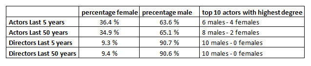

Movie Networks
In this section we will extract information from The Open Movie Database to get all the information needed to construct networks from movies released in the last 50 years. Each movie has listed three to five star actors and one to three directors that we will connect together in networkx multigraph, we will use multigraph since actors can be connected with each other not only from one movie but from multiple movies. Red nodes will contribute to female actors/directors and blue nodes will contribute to a male actors/directors
Actors Network
First, we'll construct a network of actors from movies released in the last 50 years, this is how the network looks like:

Now let's take a look at more recent data that may reflect more on the current status in the actor network. We will do so by constructing the network from movies released in the last five years (2012-2016).

Directors Network
Lets switch the focus from actors to the directors. The first network will represent directors of movies released in the last 50 years. What connects the directors together is the actors acting in the directors movies.
The second director network represents directors of movies released in the last 5 years.
Summary of all 4 networks
Now we can analize the networks
What is noticeable about the statistics is that there seems to be very little change in the female part the last decade, especially interesting numbers in the director network since the precentage of women have decreased by 0.1%. Hopefully this trend will not continue